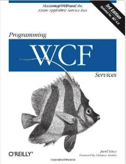

"An investment in knowledge pays the best interest." - Benjamin Franklin
Certifications
ITIL Foundations v3 Certified Professional
Concepts and Introduction to :
- Service Strategy: understands organizational objectives and customer needs.
- Service Design: turns the service strategy into a plan for delivering the business objectives.
- Service Transition: develops and improves capabilities for introducing new services into supported environments.
- Service Operation: manages services in supported environments.
- Continual Service Improvement: achieves services incremental and large-scale improvements.
- Technology and Architecture.
- Skills, Roles, Competences for Service Management.
Microsoft Certified Professional (MTA in Database) (Database)
- Knowledge of fundamental database and technology concepts.
Certified Bizagi Professional
- Process modeling
- Data model
- Form design
- Expression definition, assignments, policies, letters and notification
Postgraduate
Diploma of Database Development 2006-2007Universidad Jorge Tadeo Lozano, Bogota - Colombia
Core content :
- Advanced Database Design.
- Database Optimization.
- Data Warehousing.
- Design of BI Applications.
Bachelor
Bachelor of Systems Engineering IT 1997-2002Universidad Santiago de Cali, Cali - Colombia
Core content :
- Engineering Mathematics.
- Fundamentals of Hardware.
- Computer Systems analysis.
- Algorithms and Data Structures.
- Optimization of algorithms and methods.
- Object Oriented Software Design.
- Signals and Telematics.
- Systems Engineering and Project Management.
Books
-

Service Design Patterns: Fundamental Design Solutions for SOAP/WSDL and RESTful Web Services This is one of my favorites, I read it and I used as a reference. -
Service-Oriented Architecture (SOA): Concepts, Technology, and Design -

Programming WCF Services: Mastering WCF and the Azure AppFabric Service Bus -
Inside Microsoft SharePoint 2013 (Developer Reference) -
BPMN Pocket Reference -
Learning PHP, MySQL & JavaScript: With jQuery, CSS & HTML5 -
Head First Python